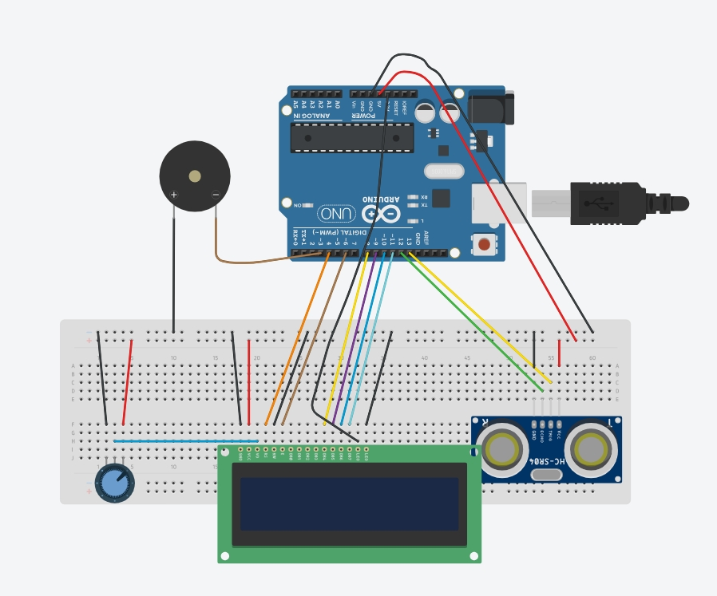

Course: TECH 117 (Computer Engineering Technology, Fall 2025)
Instructor: Ph.D. Ana Rodrigues
Team Members:
Urban mobility and tight-space maneuvering pose constant challenges for drivers, pedestrians, and industrial operators who face blind spots and spatial miscalculations leading to frequent low-speed collisions and property damage. Traditional mechanical mirrors and manual checks often fail to provide real-time spatial awareness, resulting in costly fender-benders, warehouse accidents, and pedestrian safety hazards in confined environments. Addressing this persistent hazard requires accessible, low-cost sensor technologies that deliver immediate, intuitive feedback before spatial boundaries are breached.
This embedded systems project implements a proximity-based warning mechanism using an Arduino Uno microcontroller integrated with an HC-SR04 ultrasonic sensor, a passive buzzer, and a tri-color LED array. By calculating the time-of-flight of high-frequency sound waves, the system dynamically measures distances to nearby obstacles and translates spatial data into escalating auditory and visual cues. Green, yellow, and red LEDs light up sequentially as distance decreases, complemented by a variable-frequency buzzer tone that mimics modern automotive reversing sensor networks.
This project directly aligns with the World Health Organization's Sustainable Development Goal 3: Good Health and Well-Being, specifically Target 3.6, which aims to halve the number of global deaths and injuries from road traffic accidents. By promoting accessible, low-cost technological interventions that enhance spatial awareness and prevent collisions, this prototype supports the WHO's global strategy for safer mobility and workplace safety. Developing affordable proximity alerts helps reduce preventable impact injuries, lessening the overall strain on emergency medical systems and healthcare resources worldwide.
The system needs to use an ultrasonic sensor to constantly measure distances from 2 cm to 400 cm accurately. It should show three warning levels using lights and a buzzer:
It also needs to run reliably on standard 5V USB power, use very little electricity, and react instantly in different environments.
The ultrasonic sensor measures distance; the Arduino activates LEDs and the buzzer according to distance thresholds.

| Item | Qty | Unit Price | Subtotal | Source |
|---|---|---|---|---|
| Arduino Uno Rev3 | 1 | $27.60 | $27.60 | Arduino Store |
| HC-SR04 Ultrasonic Sensor | 1 | $3.95 | $3.95 | Adafruit |
| Passive Buzzer | 1 | $0.95 | $0.95 | SparkFun |
| LCD 1602 | 1 | $3.75 CAD to $17.00 CAD | $3.75 CAD to $17.00 CAD | Adafruit |
| Breadboard | 1 | $4.95 | $4.95 | Adafruit |
| Jumper Wires | 1 set | $3.50 | $3.50 | SparkFun |
| Estimated Total | $50.95 | — | ||
The following image shows the assembled prototype on a breadboard.

The following Arduino code controls the system, lighting LEDs and activating the buzzer based on distance readings from the HC-SR04 sensor.
// Collision Warning System with Distance Sensor (HC-SR04)
// Author: Ana Rodrigues
// Oct 2, 2025
// Object is farther than 30cm: Green LED lights up
// Object is closer than 30 cm, but more than 10cm away: Yellow LED lights, buzzer plays 300Hz tone
// Object is closer than 10cm: Red LED lights up, buzzer plays 500Hz tone
// LED pins
const int greenLED = 2;
const int yellowLED = 3;
const int redLED = 4;
// Ultrasonic sensor pins
const int trigPin = 9;
const int echoPin = 10;
// Passive buzzer pin
const int buzzer = 11;
void setup() {
pinMode(greenLED, OUTPUT);
pinMode(yellowLED, OUTPUT);
pinMode(redLED, OUTPUT);
pinMode(trigPin, OUTPUT);
pinMode(echoPin, INPUT);
Serial.begin(9600);
}
void loop() {
// Measure distance
digitalWrite(trigPin, LOW);
delayMicroseconds(2);
digitalWrite(trigPin, HIGH);
delayMicroseconds(10);
digitalWrite(trigPin, LOW);
long duration = pulseIn(echoPin, HIGH);
long distance = duration * 0.034 / 2;
Serial.print("Distance: ");
Serial.print(distance);
Serial.println(" cm");
// Error in measurement:
if (distance <= 0)
return;
// Too close:
if (distance <= 10) {
digitalWrite(greenLED, LOW);
digitalWrite(yellowLED, LOW);
digitalWrite(redLED, HIGH);
tone(buzzer, 500); // Play 500Hz tone
return;
}
// Midrange:
if (distance <= 30) {
digitalWrite(greenLED, LOW);
digitalWrite(yellowLED, HIGH);
digitalWrite(redLED, LOW);
tone(buzzer, 300); // Play 300Hz tone
return;
}
// Normal status:
digitalWrite(greenLED, HIGH);
digitalWrite(yellowLED, LOW);
digitalWrite(redLED, LOW);
noTone(buzzer); // stop buzzer
delay(100);
}
This project successfully shows how an Arduino and an ultrasonic sensor can work together to create an affordable, practical collision warning system that improves safety in tight spaces.
Challenge: At first, the sensor sometimes gave jumpy, erratic readings because sound waves bounced off soft surfaces or awkward angles, causing the lights and buzzer to flicker randomly.
Solution: We fixed this by adding a quick check in our code to ignore bad or zero-value readings, which made the warning system smooth and dependable.